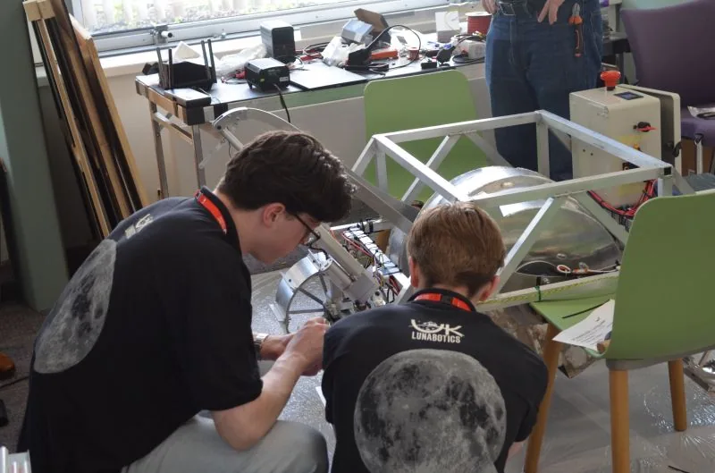

The UK's lunar construction challenge, run by The Open University.
UK Lunabotics is based on NASA's Lunabotics Challenge and was brought to the UK with the support of Caterpillar and NASA SSERVI. Industry sponsors fund it, an advisory board from across the space sector guides it, and a team at the OU's Milton Keynes campus runs it.
2026, the first year
- Teams started
- 7
- Rovers in the Moon Yard
- 4
- UK entry to the final, USA
- 1
- Students involved Stand-in
- 60+

From NASA's challenge to Milton Keynes.
NASA has run Lunabotics for US university teams since 2010. In 2026 The Open University ran the first UK edition, and the UK champion went on to the international competition in the USA.
-
2010
NASA Lunabotics
NASA's university challenge to design and build lunar excavation and construction robots.
NASA logoFile to supply -
2025
Support to bring it to the UK Check
Caterpillar and NASA SSERVI supported the launch of a UK edition. US organisers and Caterpillar UK continue to give input.
Caterpillar logoFile to supplyNASA SSERVI logoFile to supply -
2026
UK Lunabotics, year one
Seven teams entered and four brought rovers to the Moon Yard at The Open University.
-
2026
The UK at the international final
QPL, Queen's University Belfast, won and were invited to represent the UK in the USA.
UK Lunabotics is run by The Open University. It is based on NASA's challenge; it is not run or sponsored by NASA.
Open to all. Built for space.
The Open University was founded to be open to people, places, methods and ideas. It believes everyone should have the chance to learn by doing, not only from books.
UK Lunabotics puts that into practice. Entry is free, no experience is needed, and first-time teams are welcome. Students from any university or college can spend a year working the way space engineers do, from systems requirements to a working machine.
A home for UK space science Check
- Beagle 2, 2003The British Mars lander was led from the OU by Professor Colin Pillinger.
- Ptolemy on Rosetta, 2014An OU-built instrument analysed a comet's surface from the Philae lander.
- Planetary and space science todayResearchers at Milton Keynes work on instruments and missions to the Moon, Mars and beyond.
- Over 2 million students since 1969The UK's largest university, teaching people wherever they live.
Thank you to our sponsors Stand-in
Our sponsors make it possible to run UK Lunabotics free of charge to students, from the Moon Yard itself to judges, travel support and the information day.
- Halden Robotics
- Northgate Engineering
- Kestrel Orbital
- Brightwater Power
- Cairn Drives
- Meridian Sensors
- Ashby Precision
- Lowland Composites
- Fenwick Space Hub
Interested in supporting future teams? Email us about sponsorship.
Advisory board Stand-in
Leaders from industry, research and government who guide the programme, review its rules and help judge the competition.
- ChairNorthern Space Consortium Dr Helen Achterberg
- Director, Lunar Surface SystemsKestrel Orbital Marcus Oyelaran
- Professor of Planetary RoboticsUniversity of the Pennines Prof. Isla Mackintosh
- Head of Exploration ProgrammesNational Space Skills Office Rajiv Banerjee
- Chief Engineer, Autonomous MachinesHalden Robotics Sophie Lindqvist
- Construction Technology LeadNorthgate Engineering Tom Okafor
- Senior Research Fellow, In-Situ ResourcesInstitute for Lunar Construction Dr Priya Ramaswamy
- Skills and Outreach ManagerBrightwater Power Gareth Pryce
- Former Lunabotics competitor and mentorMeridian Sensors Ana Duarte
- Director of STEM PartnershipsFenwick Space Hub Claire Whitlock
- Professor of Systems EngineeringThames Valley Institute of Technology Prof. David Asante
The team behind the Moon Yard Stand-in
A small team at The Open University runs UK Lunabotics, from the arena and the rules to supporting every team through the year.
-
Dr Eleanor MarshProgramme Lead Planetary scientist who leads UK Lunabotics and chairs the competition's organising committee.
-
James WhitfieldCompetition Director Runs competition week, from rover inspection and the weigh-in to the schedule in the Moon Yard.
-
Dr Amara NwosuTechnical Lead, Arena Designed the Moon Yard and the before-and-after scans that measure each team's berm.
-
Liam HargreavesRules and Judging Writes the rulebook, coordinates the judges and answers teams' rules questions.
-
Sana QureshiTeam Support First contact for teams and Academic Supervisors, from application to design reviews.
-
Owen PritchardEngineering Technician Keeps the arena, the cameras and Mission Control running during every run.
-
Hannah ByrneOutreach and Events Organises the information day and brings schools and the public into the Moon Yard.
-
Dr Kwame MensahPartnerships Works with sponsors, advisors and the international Lunabotics community.
Thank you for backing UK student engineers.
Every sponsor, advisor, judge and volunteer helps a student team build something that works on the Moon. We couldn't run UK Lunabotics without you.
- Sponsor a future Moon Yard Fund the competition, a team's travel or a prize. Email us about sponsorship
- Supervising a team? What an Academic Supervisor does, and how to get started. How to start a team